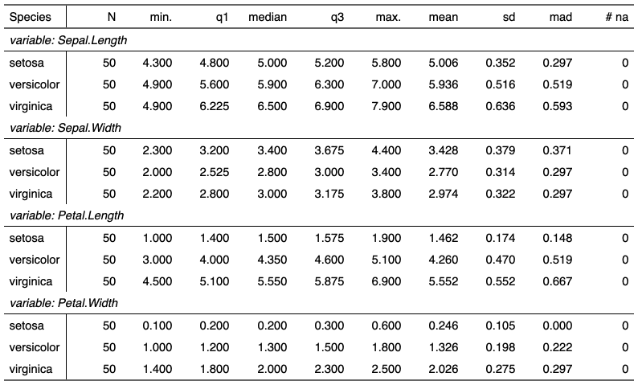

| continuous_summary {flextable} | R Documentation |
create a data.frame summary for continuous variables
continuous_summary( dat, columns = NULL, by = character(0), hide_grouplabel = TRUE, digits = 3 )
dat |
a data.frame |
columns |
continuous variables to be summarized. If NULL all continuous variables are summarized. |
by |
discrete variables to use as groups when summarizing. |
hide_grouplabel |
if TRUE, group label will not be rendered, only level/value will be rendered. |
digits |
the desired number of digits after the decimal point |

ft_1 <- continuous_summary(iris, names(iris)[1:4], by = "Species", hide_grouplabel = FALSE) ft_1